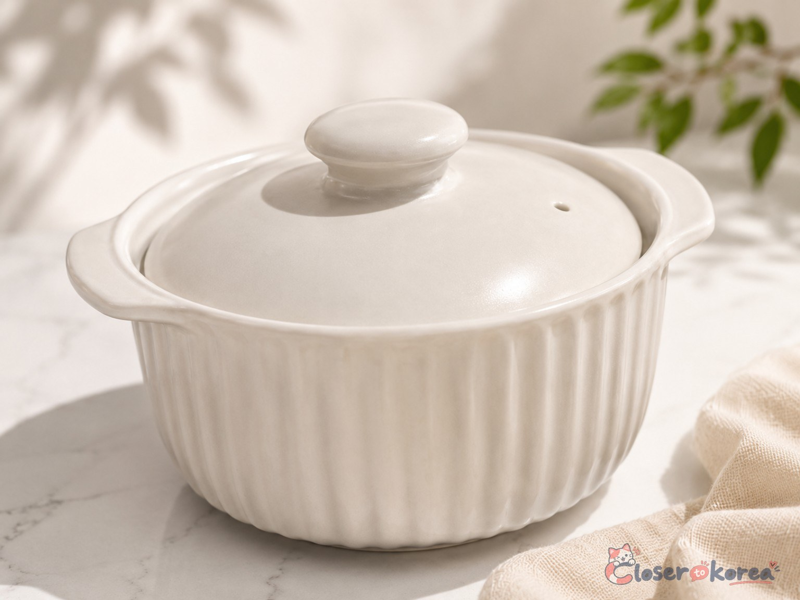
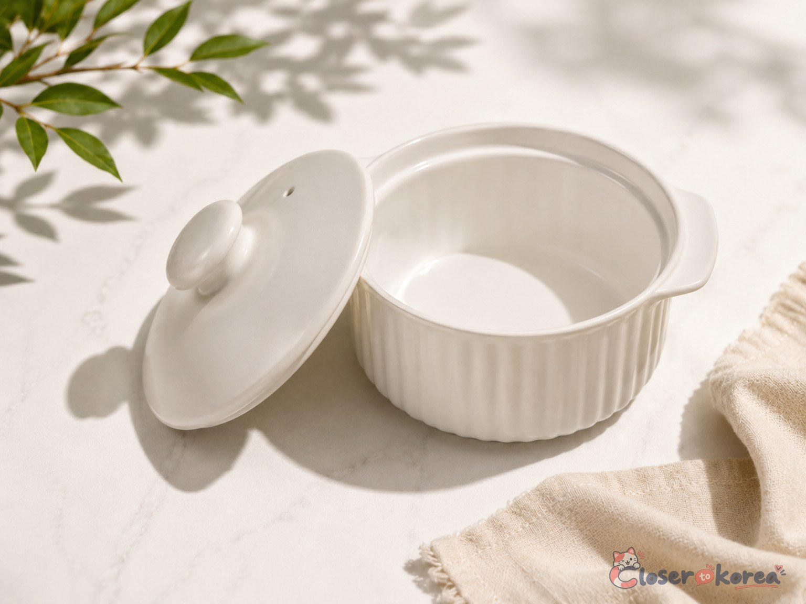
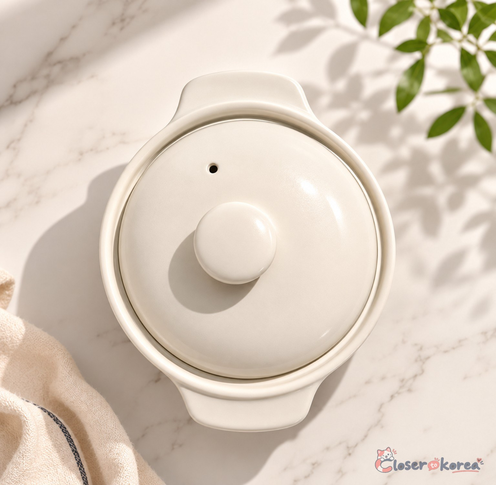
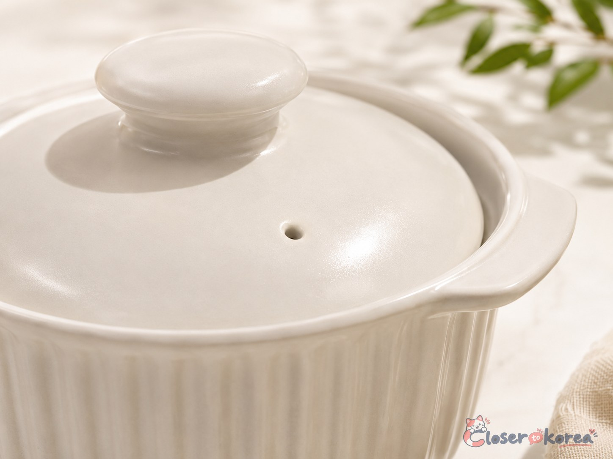
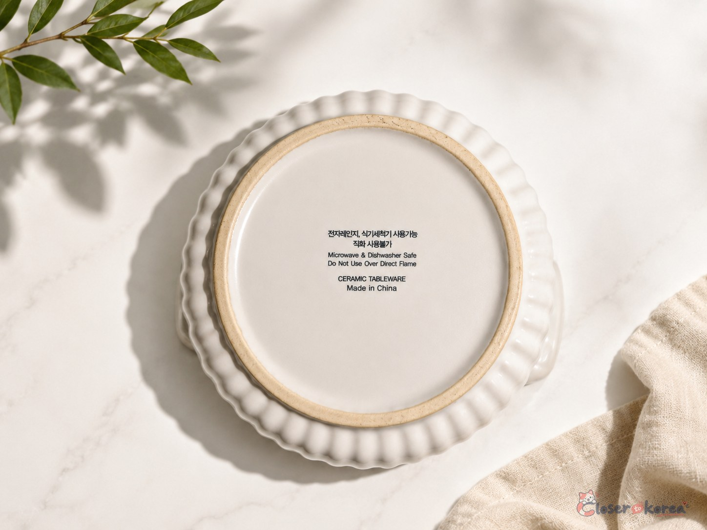

Food & Kitchen Culture
Daiso Microwave Steamed Egg Cooker
A ceramic microwave cooker purchased at Daiso Korea and personally used to prepare small portions of gyeran-jjim.
Personally UsedPersonally Purchased in KoreaExact Model Unverified
Last checked July 30, 2026
Product details & buying context
- Where it was found or used in Korea
- Personally purchased at a Daiso store in Korea. Broader repeated daily-life use has not been claimed.
- Who it is relevant for
- The site owner has used a matching-looking Daiso microwave egg cooker at least five times for small portions of gyeran-jjim.
- Why this product matters
- It offers a convenient way to prepare a small portion of a familiar Korean egg dish, based on the owner’s direct experience.
- Verification status
- Purchased at Daiso Korea and personally used. The bottom marking identifies microwave and dishwasher use, no direct flame, ceramic tableware, and Made in China. Exact manufacturer, product number, and model remain unconfirmed.
An exact U.S. retail match has not yet been confirmed. Any future linked item must be labeled as a Similar Alternative unless the exact brand and model are verified.